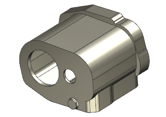
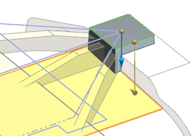
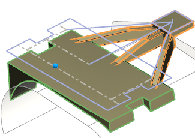

Design a team workflow
Use what you learned in this course and the scenario in the following steps to play the role of both the principal designer and a secondary designer.
-
In your role as the principal designer, open des18_85_case_on_your_own.

-
Make sure that the Tools→Update→Interpart Update→Delay Geometry, Expressions, and PMI Update option is not selected.
-
Convert the Part Module to a Linked Part Module.
-
In your role as the secondary designer, in the Linked Part Module, extrude the sketch curves as shown and use 12 for the Start Distance Value.

-
Extrude the sketch curves as shown.

-
Unite the five solids.

-
In your role as the principal designer, unite the Linked Part Module to the main body.

Tip
Did you define the Outputs in the Linked Part Module?
-
Prepare the main part file for release. Convert the external Linked Part Module to an internal Part Module.
These are the basics steps that should be used when a design team needs to collaborate on a single part design. The Principal designer:
-
Creates Part Modules in unfinished states in the main part file and then breaks these off into separate Linked Part Module files which are distributed to members of the design team.
-
Updates each Linked Part Module feature in the main part file to view the designer’s progress and ensure that continuing downstream work is based on the latest geometry in the main part file.
-
Merges the completed Linked Part Module files into the main part file.
-
-
Close all parts.